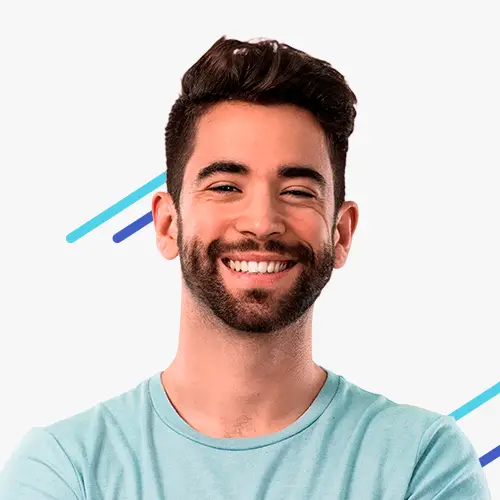

Audience
Our audience are university and high-school students that are close to the business area, in the high-end market.
| Persona | University student |
| Photo |  |
| Fictional Name | Jake Smith |
| Finance Student | N/A |
| Demographics |
|
| Goals and tasks | He is focused in getting good grades in the university, also, he wants to know new people to have a wide professional network. |
| Environment | He uses social media everyday to communicate with family and friends. His favorite apps are WhatsApp, Facebook and Instagram. |
| Quote | "Will you go to the concert on friday?" |
| Persona | High School Student |
| Photo | |
| Fictional Name | Mary Thompson |
| High-School student | N/A |
| Demographics |
|
| Goals and tasks | She is a good school student, she likes to meet with her friends after school, she likes sports and go to cinema. Also, she loves Netflix. |
| Environment | She is very confortable with technology, social media, and has a good aquisitive power. |
| Quote | "The last party was awesome!" |
Scenarios
The following scenarios, describe what the users would expect to see in the website.
- I would like to know about new food to taste.
- I would like to get 100 drinks to my party.
- I want to meet with my friends in an awesome place.
- I look for the best drink in the city.
- I want an awesome mixed fruit drink.